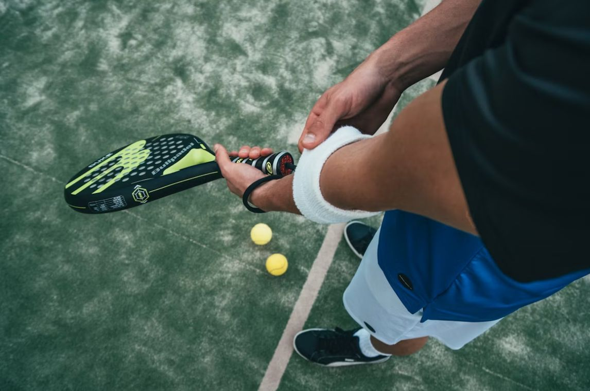

Guía · Técnica
Empuñadura continental: cómo agarrar la pala de pádel
La empuñadura continental es la base de todos los golpes. Acá ves cómo agarrar la pala, cómo saber si la tenés bien y cómo corregir el error más común.

¿Qué es la empuñadura continental?
Es la forma de tomar el mango que usamos como base para todos los golpes. La idea es simple: «darle la mano» a la pala, buscando que el vértice entre el pulgar y el índice quede en el centro del mango.
Cómo agarrarla, paso a paso
- Sostené la pala «dándole la mano» al mango.
- Buscá que el vértice entre el pulgar y el índice quede en el centro del mango.
- Pedile a alguien, o a tu profesor, que mire la toma para verificarla.
- Si te cuesta ubicarla, marcá el grip con una lapicera para sentir cuál es la posición correcta.
El error más común
Agarrar el mango como un martillo (el agarre de tenis), con la palma plana contra la cara de la pala. Así el golpe sale cerrado y sin control.
Cómo corregirlo: volvé a «darle la mano» al mango, despacio, y fijate que el pulgar quede ligeramente por detrás, no al costado.
Para practicarla
- Más fácil: mirá tu propia mano mientras armás el agarre, sin pala, para sentir primero el vértice entre el pulgar y el índice.
- Más difícil: cambiá el agarre entre continental y lateral (cerrado y abierto) con los ojos cerrados, solo por el tacto.
Para cerrar: ¿en qué parte de la mano sentís el vértice del mango?
Esta guía se basa en el ejercicio «Dale la mano a tu pala» de nuestro banco de ejercicios, que sigue el Manual de entrenador (empuñadura, páginas 4 y 5, y corrección de errores, página 23).
¿Querés que alguien mire tu agarre?
En una clase de prueba te corregimos la toma y vemos tu nivel real. Escribinos y coordinamos el horario con vos.